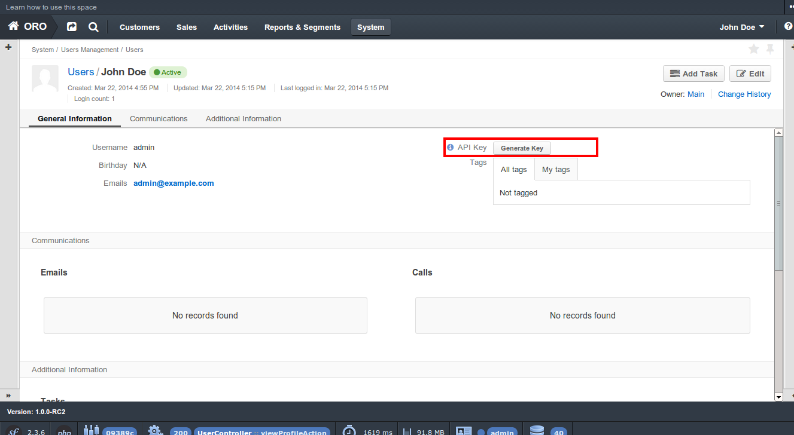

OroPlatform uses WSSE authentication mechanism to provide secured access for third party applications via REST/SOAP APIs. It’s based on the EscapeWSSEAuthenticationBundle that covers most cases from the WSSE specs.
An API key has been added to the platform in order to prevent usage of regular (raw) user passwords in third party software. It can be generated for every user on the “user view” page by users that have EDIT permissions granted.
This key should be used for PasswordDigest generation on the client side.
To generate an authentication header the console command oro:wsse:generate-header should be used.
1 2 3 | user@host: php app/console oro:wsse:generate-header yourApiKey
Authorization: WSSE profile="UsernameToken"
X-WSSE: UsernameToken Username="admin", PasswordDigest="mTe5J+wM7tcBsI2Qx7bnajQ+0lQ=", Nonce="OWRmNWEwZWZiMTcyMTRkNQ==", Created="2014-12-09T21:29:18+02:00"
|
It has apiKey as the required argument and outputs generated headers. Here is an example of a request using curl:
1 2 3 4 5 6 7 8 9 10 11 12 13 | curl -i -H "Accept: application/json" -H 'Authorization: WSSE profile="UsernameToken"' -H 'X-WSSE: UsernameToken Username="admin", PasswordDigest="buctlzbeVflrVCoEfTKB1mkltCI=", Nonce="ZmMzZDg4YzMzYzRmYjMxNQ==", Created="2014-03-22T15:24:49+00:00"' http://crmdev.lxc/app_dev.php/api/rest/latest/users
HTTP/1.1 200 OK
Server: nginx
Content-Type: application/json
Transfer-Encoding: chunked
Connection: keep-alive
X-Powered-By: PHP/5.4.23-1~dotdeb.0
Set-Cookie: CRMID=kin0s55gkeg3fcuvujcv02dp97; path=/; HttpOnly
Cache-Control: no-cache
Date: Sat, 22 Mar 2014 15:27:10 GMT
X-Debug-Token: b1e4b9
[{"id":1,"username":"admin","email":"admin@example.com","namePrefix":null,"firstName":"John","middleName":null,"lastName":"Doe","nameSuffix":null,"birthday":null,"enabled":true,"lastLogin":"2014-03-22T14:15:19+00:00","loginCount":1,"createdAt":"2014-03-22T13:55:14+00:00","updatedAt":"2014-03-22T14:15:19+00:00","owner":{"id":1,"name":"Main"},"roles":[{"id":3,"role":"ROLE_ADMINISTRATOR","label":"Administrator"}]}]
|
To generate an authentication header with PHP:
1 2 3 4 5 6 7 8 9 10 11 12 13 14 | $userName = 'your username';
$userApiKey = 'your apiKey';
$nonce = base64_encode(substr(md5(uniqid()), 0, 16));
$created = date('c');
$digest = base64_encode(sha1(base64_decode($nonce) . $created . $userApiKey, true));
$wsseHeader = "Authorization: WSSE profile=\"UsernameToken\"\n";
$wsseHeader.= sprintf(
'X-WSSE: UsernameToken Username="%s", PasswordDigest="%s", Nonce="%s", Created="%s"',
$userName,
$digest,
$nonce,
$created
);
|
The generated header has a lifetime of 3600s and it expires if not used during this time. Each nonce might be used only once in specific time for generation of the password digest. By default, the nonce cooldown time is also set to 3600s. This rule is aimed to improve safety of the application and prevent “replay” attacks.
Therefore, the header generation algorithm should be implemented on the side of the client application and headers should be re-generated for each request.